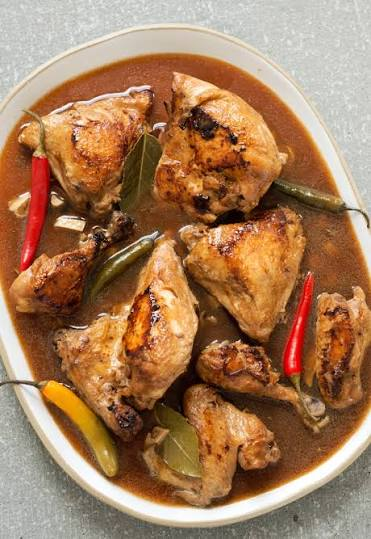
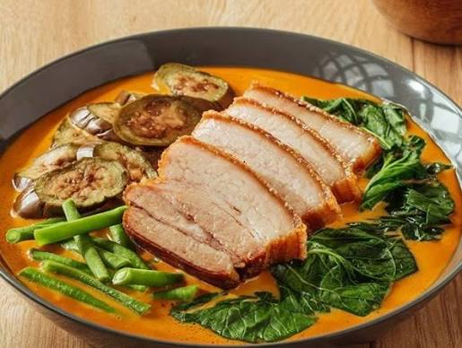
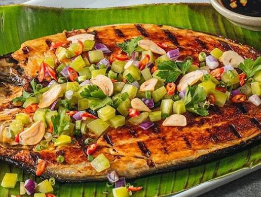
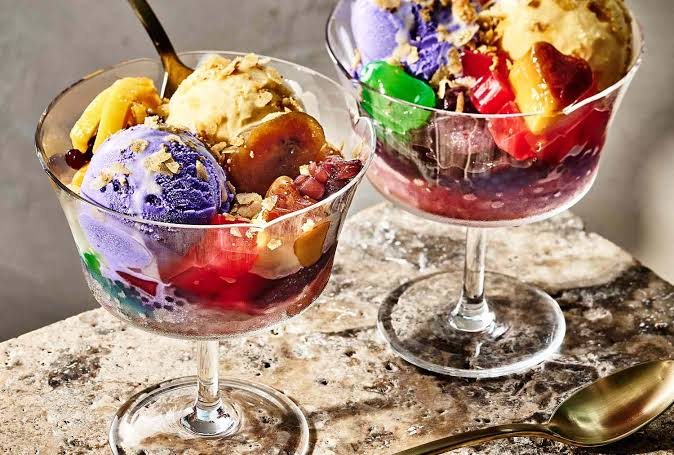
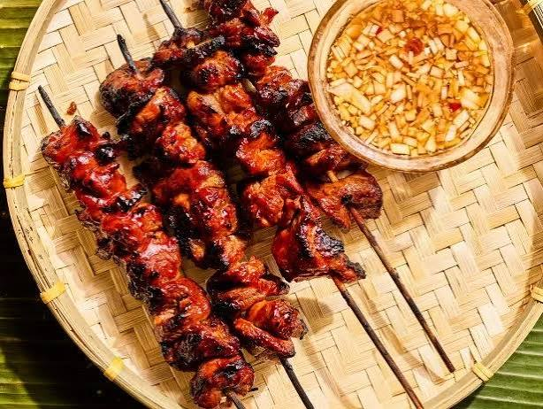

A Taste of Home
Good food. Good stories. Always shared.
Discover Filipino favorites and local dishes made for sharing. From comforting home-cooked meals to grilled street-food classics, every plate tells a story.
Explore the Food
Favorites Worth a First Bite
Classic flavors and generous servings.


Halo-Halo Special
A colorful dessert with sweet ingredients, shaved ice, and ice cream.
Explore menu →From Our Kitchen
Cook a Filipino Favorite
Watch the cooking video for Pork Bicol Express and discover a dish inspired by the bold flavors of Bicol.
Watch the Cooking Video